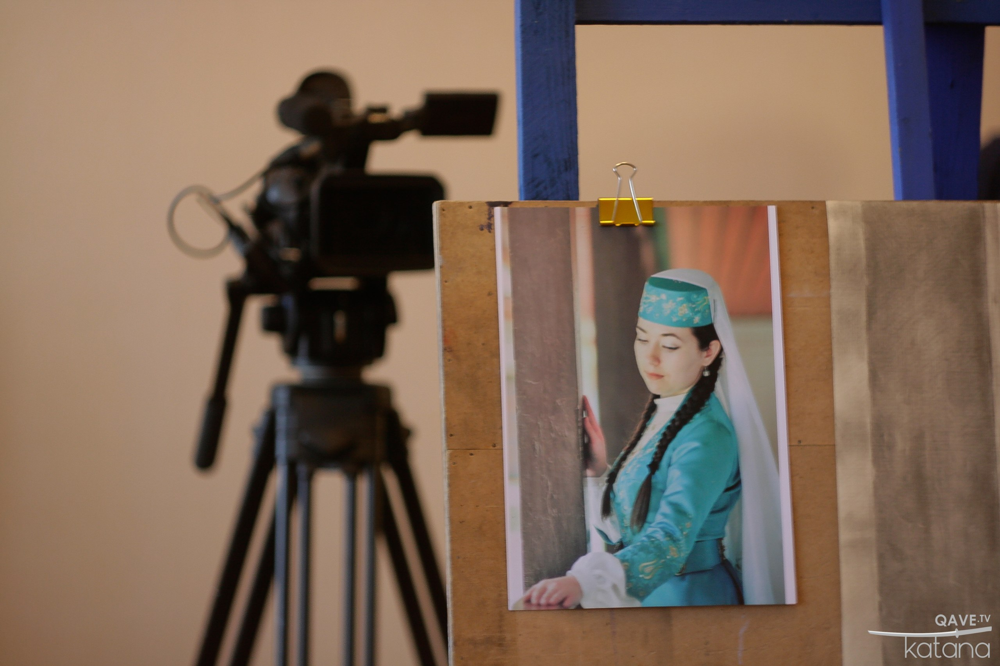
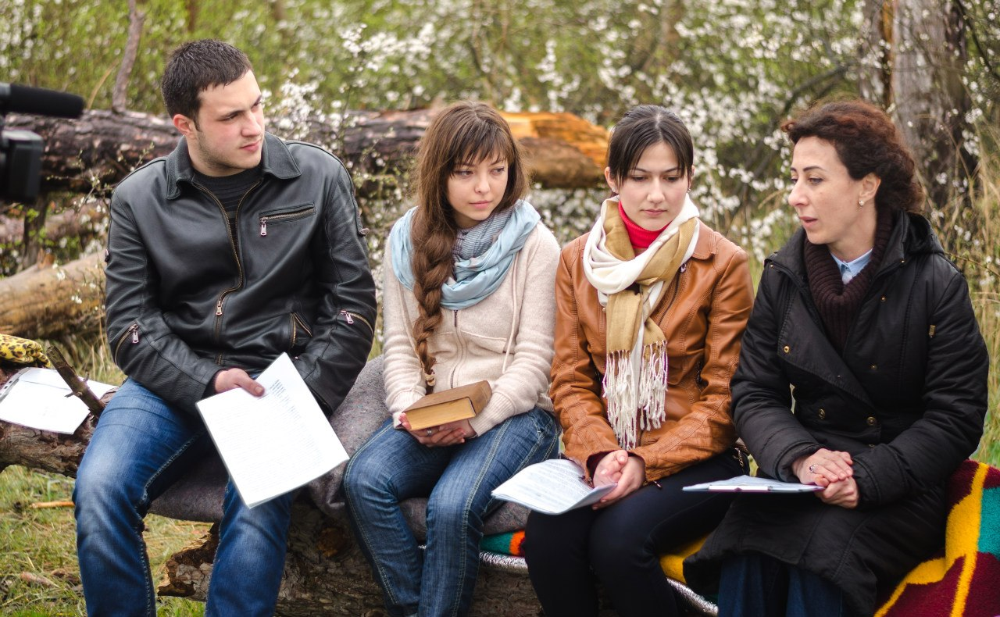
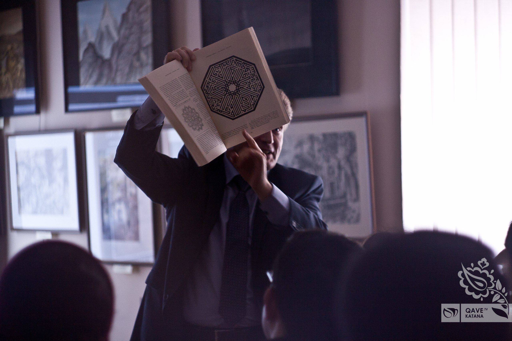
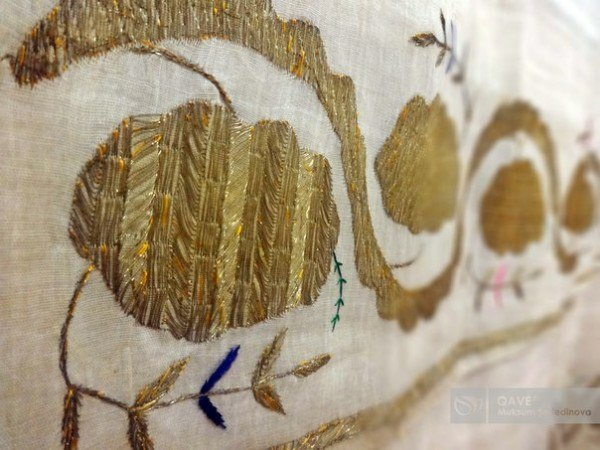

   
Громадська організація "Кардашлик" є автором і започатківцем ідеї про медіаканал, який висвітлюватиме кримськотатарську культуру в Інтернеті. Основним контентом якого стануть відеоролики про кримськотатарську літературу, лекції з історії Криму, бесіди про мистецтво, відеоуроки кримськотатарської мови, сюжети про мечеті, що збереглися з ханського часу тощо.
Місія проекту - популяризація традиційної культури кримських татар серед молоді. Візія: регулярний випуск роликів за різними напрямками кримськотатарської культури в тісному контакті з цільовою аудиторією - кримськотатарською молоддю. Надалі ми хочемо робити ефіри зі студії і транслювати передачі наживо. Кінцева мета: створення мультимедіатеки про культуру та історію корінного народу Криму - кримських татар. У майбутньому з роликів каналу кожен зможе отримати вичерпну інформацію про кримськотатарську культуру. Всі ролики готуються трьома мовами - кримськотатарською, російською та українською. Тематика каналу. На сьогодні ведеться робота за наступними напрямами: